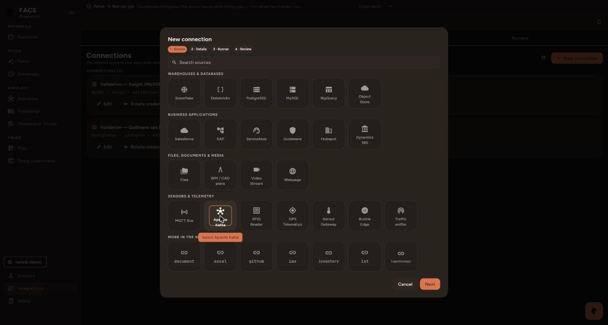
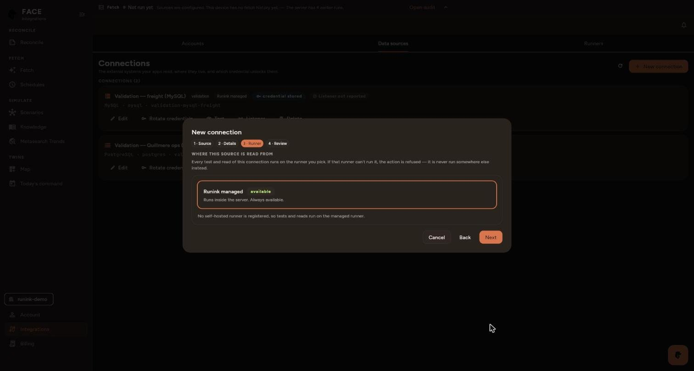

Apache Kafka, live estate
Warning: The test-estate safety rule: stand the test estate up only beside a test instance, never a production deployment. The broker below is encrypted and every client logs in, but its certificate authority, keys and passwords are generated on your machine for this test only. Use a scratch machine.
Streaming · type kafka · a broker on your machine, fed without end
What it is
A Kafka broker on your own machine that never stops receiving events, so you can watch FACE take in a stream rather than a recording. A producer generates the quickstart estate's operations: trucks moving between the sites, dock doors, cold rooms, forklifts, meters, drone surveys, yard gates, and the mainframe's order and inventory changes.
The events are about the same Quillmere estate as every other quickstart: the same warehouses, yards, docks, trailers, carriers, customers and items, with the same IDs. The values are authored for the quickstart, not measured. Every record says so in its provenance field: authored quickstart estate.
The broker setup follows Confluent's Kafka on Docker tutorial: one Apache Kafka node in KRaft mode, no ZooKeeper. A Schema Registry is added, because the values are Avro. For the recorded topics and the ksqlDB catalogue, see Apache Kafka. The connector reference is Streaming: Kafka.
FACE connects to Kafka only over SASL_SSL. The broker below speaks TLS with a certificate from a certificate authority you generate, and every client logs in with SCRAM-SHA-512. The Schema Registry answers HTTPS only, from the same authority, and every call logs in with its own user and password. FACE refuses a Kafka connection without encryption or without a login, and a registry over plain http:// or without its login.
What you need
- Docker with Compose, and
openssl. - The producer image,
face-stream-producer:1.4.0.
Note: The producer image is not on a public registry yet. Without it, steps 1 to 3 still give you a running broker and Schema Registry, but no events.
1. Generate the keys and passwords
In an empty directory, save this as setup.sh and run it once (sh setup.sh). It writes the passwords to .env, which Compose reads, and the certificate authority, the broker's and the registry's certificates and the client files to secrets/. The authority's private key is deleted as soon as it has signed, so nothing else can be signed with it.
#!/bin/sh
# The name FACE uses to reach this machine. Keep localhost when FACE runs here.
KAFKA_HOST=${KAFKA_HOST:-localhost}
set -eu
umask 077
mkdir -p secrets
pw() { openssl rand -hex 20; }
cat > .env <<EOF
KAFKA_HOST=$KAFKA_HOST
SCRAM_BROKER=$(pw)
SCRAM_FACE_READER=$(pw)
SCRAM_PRODUCER=$(pw)
SCRAM_SCHEMA_REGISTRY=$(pw)
REGISTRY_FACE_READER=$(pw)
REGISTRY_PRODUCER=$(pw)
EOF
. ./.env
openssl genpkey -algorithm EC -pkeyopt ec_paramgen_curve:P-256 -out secrets/ca.key
openssl req -x509 -new -key secrets/ca.key -sha256 -days 365 -subj "/CN=Quickstart Kafka CA" \
-addext "basicConstraints=critical,CA:TRUE,pathlen:0" -addext "keyUsage=critical,keyCertSign,cRLSign" \
-out secrets/ca.crt
leaf() {
openssl genpkey -algorithm EC -pkeyopt ec_paramgen_curve:P-256 -out "secrets/$1.key"
openssl req -new -key "secrets/$1.key" -subj "/CN=$1" -out "secrets/$1.csr"
printf 'basicConstraints=critical,CA:FALSE\nkeyUsage=critical,digitalSignature\nextendedKeyUsage=serverAuth\nsubjectAltName=%s\n' "$2" > "secrets/$1.ext"
openssl x509 -req -in "secrets/$1.csr" -CA secrets/ca.crt -CAkey secrets/ca.key -CAcreateserial \
-days 365 -sha256 -extfile "secrets/$1.ext" -out "secrets/$1.crt"
}
leaf broker "DNS:broker,DNS:$KAFKA_HOST"
leaf schema-registry "DNS:schema-registry,DNS:$KAFKA_HOST"
cat secrets/broker.key secrets/broker.crt > secrets/broker-keystore.pem
rm -f secrets/ca.key secrets/ca.srl secrets/*.csr secrets/*.ext
# The producer reads its passwords from files, never from a flag.
printf %s "$SCRAM_PRODUCER" > secrets/producer-sasl-password
printf %s "$REGISTRY_PRODUCER" > secrets/producer-registry-password
# The console tools in step 2 log in as face-reader.
cat > secrets/face-reader.properties <<EOF
security.protocol=SASL_SSL
sasl.mechanism=SCRAM-SHA-512
sasl.jaas.config=org.apache.kafka.common.security.scram.ScramLoginModule required username="face-reader" password="$SCRAM_FACE_READER";
ssl.truststore.type=PEM
ssl.truststore.location=/etc/kafka/tls/ca.crt
EOF
# The containers run as their own users, so they must be able to read these.
# That is why this is a scratch machine only.
chmod 0644 secrets/*
echo "keys and passwords written to secrets/ and .env"
If FACE runs on another machine, set the name it reaches this one by first, for example KAFKA_HOST=kafka-host.example.invalid sh setup.sh. The certificates then carry that name and the broker advertises it.
2. Start the broker, the registry and the producer
Save this as compose.yaml in the same directory:
x-kafka-image: &kafka-image apache/kafka:4.2.2
x-karapace-image: &karapace-image ghcr.io/aiven-open/karapace:6.2.4
services:
# Formats the broker's storage WITH its SCRAM users, once, before it starts.
format:
image: *kafka-image
user: "1000:1000"
volumes: [kafka-data:/var/lib/kafka/data]
entrypoint: ["bash", "-c"]
command:
- |
cat > /tmp/format.properties <<CFG
process.roles=broker,controller
node.id=1
controller.quorum.voters=1@localhost:9093
controller.listener.names=CONTROLLER
listeners=INTERNAL://broker:29092,EXTERNAL://0.0.0.0:9092,CONTROLLER://localhost:9093
listener.security.protocol.map=INTERNAL:SASL_SSL,EXTERNAL:SASL_SSL,CONTROLLER:SASL_PLAINTEXT
inter.broker.listener.name=INTERNAL
log.dirs=/var/lib/kafka/data
CFG
/opt/kafka/bin/kafka-storage.sh format --ignore-formatted -t rtWtPypOQIeDOIHE0I7Rtg -c /tmp/format.properties \
--add-scram 'SCRAM-SHA-512=[name=broker,password=${SCRAM_BROKER}]' \
--add-scram 'SCRAM-SHA-512=[name=face-reader,password=${SCRAM_FACE_READER}]' \
--add-scram 'SCRAM-SHA-512=[name=producer,password=${SCRAM_PRODUCER}]' \
--add-scram 'SCRAM-SHA-512=[name=schema-registry,password=${SCRAM_SCHEMA_REGISTRY}]' > /dev/null
broker:
image: *kafka-image
hostname: broker
container_name: broker
depends_on:
format: {condition: service_completed_successfully}
ports:
- "9092:9092"
volumes:
- kafka-data:/var/lib/kafka/data
- ./secrets:/etc/kafka/tls:ro
environment:
CLUSTER_ID: rtWtPypOQIeDOIHE0I7Rtg
KAFKA_NODE_ID: 1
KAFKA_PROCESS_ROLES: broker,controller
KAFKA_LOG_DIRS: /var/lib/kafka/data
# Containers use broker:29092; FACE uses ${KAFKA_HOST}:9092. Both are
# SASL_SSL. The controller listens on the container's loopback only.
KAFKA_LISTENERS: INTERNAL://broker:29092,EXTERNAL://0.0.0.0:9092,CONTROLLER://localhost:9093
KAFKA_ADVERTISED_LISTENERS: INTERNAL://broker:29092,EXTERNAL://${KAFKA_HOST}:9092
KAFKA_LISTENER_SECURITY_PROTOCOL_MAP: INTERNAL:SASL_SSL,EXTERNAL:SASL_SSL,CONTROLLER:SASL_PLAINTEXT
KAFKA_CONTROLLER_LISTENER_NAMES: CONTROLLER
KAFKA_INTER_BROKER_LISTENER_NAME: INTERNAL
KAFKA_CONTROLLER_QUORUM_VOTERS: 1@localhost:9093
KAFKA_SASL_ENABLED_MECHANISMS: SCRAM-SHA-512
KAFKA_SASL_MECHANISM_INTER_BROKER_PROTOCOL: SCRAM-SHA-512
KAFKA_LISTENER_NAME_INTERNAL_SCRAM___SHA___512_SASL_JAAS_CONFIG: org.apache.kafka.common.security.scram.ScramLoginModule required username="broker" password="${SCRAM_BROKER}";
KAFKA_LISTENER_NAME_EXTERNAL_SCRAM___SHA___512_SASL_JAAS_CONFIG: org.apache.kafka.common.security.scram.ScramLoginModule required;
KAFKA_SASL_MECHANISM_CONTROLLER_PROTOCOL: PLAIN
KAFKA_LISTENER_NAME_CONTROLLER_SASL_ENABLED_MECHANISMS: PLAIN
KAFKA_LISTENER_NAME_CONTROLLER_PLAIN_SASL_JAAS_CONFIG: org.apache.kafka.common.security.plain.PlainLoginModule required username="broker" password="${SCRAM_BROKER}" user_broker="${SCRAM_BROKER}";
KAFKA_SSL_KEYSTORE_TYPE: PEM
KAFKA_SSL_KEYSTORE_LOCATION: /etc/kafka/tls/broker-keystore.pem
KAFKA_SSL_TRUSTSTORE_TYPE: PEM
KAFKA_SSL_TRUSTSTORE_LOCATION: /etc/kafka/tls/ca.crt
KAFKA_SSL_ENABLED_PROTOCOLS: TLSv1.3,TLSv1.2
KAFKA_OFFSETS_TOPIC_REPLICATION_FACTOR: 1
KAFKA_TRANSACTION_STATE_LOG_REPLICATION_FACTOR: 1
KAFKA_TRANSACTION_STATE_LOG_MIN_ISR: 1
KAFKA_GROUP_INITIAL_REBALANCE_DELAY_MS: 0
KAFKA_AUTO_CREATE_TOPICS_ENABLE: "false"
# Writes the registry's login file: salted hashes, made by Karapace's own tool.
registry-auth:
image: *karapace-image
volumes: [registry-auth:/auth]
entrypoint: ["sh", "-c"]
command:
- |
r=$$(karapace_mkpasswd -u face-reader -a sha512 '${REGISTRY_FACE_READER}')
p=$$(karapace_mkpasswd -u producer -a sha512 '${REGISTRY_PRODUCER}')
printf '{"users": [%s, %s], "permissions": [{"username": "face-reader", "operation": "Read", "resource": "Subject:quillmere\\\\..*"}, {"username": "producer", "operation": "Write", "resource": "Subject:quillmere\\\\..*"}]}\n' "$$r" "$$p" > /auth/auth.json
schema-registry:
# Karapace answers the Confluent Schema Registry API.
image: *karapace-image
entrypoint: ["python3", "-m", "karapace"]
depends_on:
broker: {condition: service_started}
registry-auth: {condition: service_completed_successfully}
ports:
- "8081:8081"
volumes:
- ./secrets:/etc/kafka/tls:ro
- registry-auth:/auth:ro
environment:
KARAPACE_KARAPACE_REGISTRY: "true"
KARAPACE_HOST: 0.0.0.0
KARAPACE_PORT: 8081
KARAPACE_ADVERTISED_HOSTNAME: schema-registry
# HTTPS only, and every call logs in.
KARAPACE_SERVER_TLS_CERTFILE: /etc/kafka/tls/schema-registry.crt
KARAPACE_SERVER_TLS_KEYFILE: /etc/kafka/tls/schema-registry.key
KARAPACE_REGISTRY_AUTHFILE: /auth/auth.json
# Its own broker connection: SASL_SSL as schema-registry.
KARAPACE_BOOTSTRAP_URI: broker:29092
KARAPACE_SECURITY_PROTOCOL: SASL_SSL
KARAPACE_SASL_MECHANISM: SCRAM-SHA-512
KARAPACE_SASL_PLAIN_USERNAME: schema-registry
KARAPACE_SASL_PLAIN_PASSWORD: ${SCRAM_SCHEMA_REGISTRY}
KARAPACE_SSL_CAFILE: /etc/kafka/tls/ca.crt
KARAPACE_TOPIC_NAME: _schemas
KARAPACE_LOG_LEVEL: WARNING
producer:
image: face-stream-producer:1.4.0
depends_on: [broker, schema-registry]
restart: unless-stopped
volumes:
- ./secrets:/run/quickstart:ro
command:
- produce
- kafka
- --bootstrap=broker:29092
- --security-protocol=sasl_ssl
- --sasl-mechanism=SCRAM-SHA-512
- --sasl-username=producer
- --sasl-password-file=/run/quickstart/producer-sasl-password
- --tls-ca-file=/run/quickstart/ca.crt
- --registry=https://schema-registry:8081
- --registry-username=producer
- --registry-password-file=/run/quickstart/producer-registry-password
volumes:
kafka-data:
registry-auth:
Start everything:
docker compose up -d
docker compose logs -f producer
The producer creates its topics, registers their schemas, lists the anomalies it plants, and then sends about 10 events a second. It retries until the broker and the registry answer, so the start order does not matter. Nothing on the network is unencrypted: the broker's controller listener is on its own loopback, and every other port is TLS with a login.
3. List the topics and read a few records
Log in as face-reader, the user FACE will use:
docker exec broker /opt/kafka/bin/kafka-topics.sh --bootstrap-server broker:29092 \
--command-config /etc/kafka/tls/face-reader.properties --list
. ./.env
curl -s --cacert secrets/ca.crt -u "face-reader:$REGISTRY_FACE_READER" https://localhost:8081/subjects
You see the twelve topics below and one -value subject for each.
docker exec broker /opt/kafka/bin/kafka-console-consumer.sh \
--bootstrap-server broker:29092 \
--consumer.config /etc/kafka/tls/face-reader.properties \
--topic quillmere.fleet.telematics.v1 \
--from-beginning --max-messages 5 \
--property print.key=true --property print.timestamp=true
The key is the trailer ID. The value is Avro in the Confluent wire format: a zero byte, the 4-byte schema ID, then the Avro body. The console consumer prints it as raw bytes. To read values as text, run the producer without --registry: it then writes JSON values and registers no schemas.
4. Add the connection in FACE
In Settings › Integrations › Systems, add a Kafka connection:
| Setting | Value |
|---|---|
bootstrap_servers |
localhost:9092 |
topics |
quillmere. |
client_id |
face-quickstart |
security_protocol |
sasl_ssl |
sasl_mechanism |
scram-sha-512 |
username |
face-reader |
ssl_ca_pem |
the contents of secrets/ca.crt |
schema_registry_url |
https://localhost:8081 |
schema_registry_username |
face-reader |
| Credential | Value |
|---|---|
password |
SCRAM_FACE_READER from .env |
schema_registry_password |
REGISTRY_FACE_READER from .env |
ssl_ca_pem is a certificate, not a secret: it is what lets FACE check the broker's and the registry's certificates against the authority you generated, instead of trusting anything. localhost works when FACE runs on the same machine as the broker. If FACE runs elsewhere, use the KAFKA_HOST you gave setup.sh in both addresses, for example kafka-host.example.invalid:9092 and https://kafka-host.example.invalid:8081.
topics is a prefix filter: quillmere. matches all twelve topics.
FACE lands a fetch of one Kafka connection as one table, every topic it reads side by side. So that the readings are read as readings, give the two sensor-reading topics their own connections, each with the property runink.domain:
| Connection | topics |
Property runink.domain |
What FACE reads from it |
|---|---|---|---|
| Fleet sensor readings | quillmere.fleet.sensor-readings. |
telemetry |
vehicle positions on the map, and cold-chain time out of band |
| Equipment readings | quillmere.assets.equipment-readings. |
equipment |
trends towards each channel's stated limit, with the projected crossing |
and narrow the first connection's topics to the other ten (quillmere.fleet.telematics., quillmere.site., quillmere.drone., quillmere.yard., quillmere.mainframe.). All three use the same security settings and credentials.
Step by step in the Console
- Open Settings › Integrations › Systems and select New connection.
Source: under Sensors & telemetry, select Apache Kafka, then Next.

Details: enter a Connection name (the Id follows it) and the Environment. Under Settings, fill in Bootstrap servers (comma-separated), Topics (a prefix) and User (
face-reader).- Set Security protocol to
sasl_ssl. It is the only value FACE saves: plaintext and SASL_PLAINTEXT send everything unencrypted, andsslcarries no login. - Under Credentials, enter Password and Schema Registry password from
.env. - Open Advanced and set SASL mechanism to
scram-sha-512, Client ID, Schema Registry URL (https://…), Schema Registry user (face-reader) and CA certificate (the contents ofsecrets/ca.crt). The form has no switch to skip certificate checks, and FACE refuses a connection withinsecure_skip_verifyon. Runner: keep Runink managed, or pick a registered runner that can reach the broker, then Next.

Review: check the values, keep Test after saving ticked and select Test & save. If a security setting is missing, the Console says which and does not save.
- The test routes to the runner and asks the broker to answer. Tested: the source answered means the broker is reachable and accepted the login; it does not mean records have been read. Select Done.
The connection joins the list and appears among the sources on Ask, and in every brief's source list.
The topics
Every topic has 3 partitions. The key is a business ID, as plain text, so a consumer can join on it without the registry. The value schema is registered under the topic name (<topic>-value). Positions are WGS84 degrees, in latitude and longitude. Times are UTC, and each record's Kafka timestamp is the time of the event.
| Topic | Key | What it carries | How often |
|---|---|---|---|
quillmere.fleet.telematics.v1 |
trailer_id |
Position along the lane between sites, speed, heading, odometer, fuel, engine fault, reefer setpoint and return-air temperature, rear door | every 5 s per trailer, 10 trailers |
quillmere.site.dock-doors.v1 |
dock_id |
Dock door open or closed, dock occupied, door cycle count, last change | every 10 s per dock, 9 docks |
quillmere.site.environment.v1 |
sensor_id |
Temperature and humidity per zone: ambient, cold room, freezer, dock apron, the port's reefer rack | every 15 s per sensor, 14 sensors |
quillmere.site.equipment.v1 |
equipment_id |
Forklifts, AGVs and straddle carriers: position, state, battery, speed, load | every 5 s per machine, 11 machines |
quillmere.site.energy.v1 |
meter_id |
Demand and energy per circuit: refrigeration, lighting, dock doors, chargers, reefer rack, gate | every 60 s per meter, 16 meters |
quillmere.drone.survey.v1 |
flight_id |
Survey frames with position and altitude: case counts by rack location in the DCs, trailer counts in the yards and the port, perimeter checks | every 4 s while flying; one 8-minute flight per site each hour |
quillmere.yard.gate-events.v1 |
trailer_id |
Trailers in and out of the yard and port gates, read by RFID or plate | on each arrival and departure |
quillmere.yard.trailer-positions.v1 |
trailer_id |
Parked trailer's yard slot, load state, gate-in time and dwell | every 30 s per parked trailer |
quillmere.mainframe.orders.cdc.v1 |
order_id |
Order header changes from the order-entry mainframe | every 10 s |
quillmere.mainframe.inventory.cdc.v1 |
<sku_id>@<location_id> |
On-hand and allocated cases per item and warehouse | every 5 s, after a full refresh at start |
quillmere.fleet.sensor-readings.v1 |
asset_id |
Sensor readings: a GPS fix (metric gps_fix, latitude/longitude with geo_stated, speed, odometer) for every tractor, van and trailer; every reefer's return air (metric temperature) with its load's stated band (threshold_min/threshold_max) and the load spec's allowance out of band (max_excursion_minutes), and, on a reefer trailer carrying a shipment, the load's value (load_value, load_value_currency) |
every 30 s per vehicle (28), every 60 s per reefer (7) |
quillmere.assets.equipment-readings.v1 |
asset_id |
Sensor readings for every equipment channel of the fleet, the yards and the warehouses: tractor coolant, oil pressure, battery, brake pads, tyres; reefer return air and compressor duty; yard tractor hydraulics, gate barrier motors, reefer plug-ins; forklift batteries and motors, dock levelers, refrigeration compressors, cold and freezer rooms. Each states its limit in attributes (alarm_c, trip_c or replace_below_pct, with limit_source) |
every 120 s per channel (183) |
The two sensor-reading topics use the field names a telemetry source lands as (asset_id, observed_at, metric, value, value_stated, unit, the threshold pair with its *_stated flags, attributes). The tractors and vans run loops from their distribution centre through three customer delivery sites and back, on straight lines between the points, not on roads. A dozen channels drift towards their limit on a three-hour ramp and reset, time compressed so that minutes of the stream show the slope: coolant creeping up, brake pads wearing, a reefer's return air leaving its 2-8 °C band, a cold room drifting off its setpoint, a refrigeration compressor running hotter.
The sites are the quickstart's three distribution centres and their yards, at their authored addresses (Elk Grove Village IL, Plainfield IN and Edwardsville IL), and one port terminal: Quillmere Calumet Terminal, a point in the Lake Calumet port district in Chicago. The trucks run four lanes along the interstate corridors between them. The lanes are polylines through the cities on those corridors, not a road network.
The mainframe records
The two mainframe topics are change data, as a capture agent delivers it from an IMS database updated by CICS transactions. Each record carries the fixed-width record, already converted from EBCDIC, and the same fields decoded. op is REFRESH for the initial full read, then INSERT or UPDATE.
The order header record, copybook QORDHDR, 88 bytes:
05 OH-ORDER-ID PIC X(10).
05 OH-CUST-ID PIC X(10).
05 OH-CUST-PO PIC X(16).
05 OH-WHSE-ID PIC X(10).
05 OH-STATUS PIC X(2). OP, AL, PK or SH
05 OH-LINE-COUNT PIC 9(3).
05 OH-TOTAL-CENTS PIC 9(11).
05 OH-CHANGED-TS PIC X(26). YYYY-MM-DD-HH.MM.SS.NNNNNN
The inventory balance record, copybook QINVBAL, 88 bytes:
05 IB-SKU-ID PIC X(10).
05 IB-LOC-ID PIC X(10).
05 IB-DESC PIC X(24).
05 IB-UOM PIC X(2).
05 IB-ON-HAND PIC S9(7) SIGN LEADING SEPARATE.
05 IB-ALLOCATED PIC S9(7) SIGN LEADING SEPARATE.
05 IB-CHANGED-TS PIC X(26).
The mainframe is a source in its own right: it opens with a balance for every quickstart item at every warehouse, then changes them. New orders continue the order numbers after the quickstart's 24 orders and use its customers and items.
The planted anomalies
Six anomalies recur every hour, so FACE has something to find whenever you connect. The minute is counted from when the producer started.
| ID | Minute | Where | What |
|---|---|---|---|
| ANOM-L1 | 10 to 30 | fleet.telematics, trailer TRL-102 |
A reefer temperature excursion. The door opens, then the return air climbs through 9.2, 10.8 and 11.4 °C and stays above the 8 °C limit for about 12 minutes. It is the same profile as the cold-chain scenario of shipment SHP-50004. |
| ANOM-L2 | 25 to 45 | site.dock-doors, DOCK-EAST-02 |
A stuck sensor. It keeps sending heartbeats, but the door state, cycle count and last-change time do not move for 20 minutes. Every other door changes at least every 10 minutes. |
| ANOM-L3 | 32 to 40 | drone.survey at WH-SOUTH |
A drone count that disagrees with the mainframe. For one item, the drone counts 48 cases (one pallet) fewer than the mainframe's on-hand balance at that moment. Every other item agrees. |
| ANOM-L4 | from 30 | yard.gate-events |
A duplicate gate read. The first gate event after the half hour is delivered twice, with the same event_id. |
| ANOM-L5 | 35 | fleet.telematics, trailer TRL-105 |
A GPS jump. One frame puts the trailer about 380 km north of its lane, 5 seconds after and before frames on the lane, at an ordinary speed. |
| ANOM-L6 | 40 to 48 | drone.survey at YARD-SOUTH |
A perimeter finding: three frames report a gap in the north fence. |
The producer prints this list, with the item for ANOM-L3, when it starts.
Reproducing a run
The stream is deterministic. The same --seed and --start give the same records, byte for byte:
docker run --rm face-stream-producer:1.4.0 produce kafka --dry-run --ticks 60 --start 2026-10-11T12:00:00Z
--dry-run prints a minute of records as JSON lines and opens no connection. Other flags:
| Flag | Default | |
|---|---|---|
--bootstrap |
none | The broker, host:port |
--security-protocol |
plaintext |
sasl_ssl for this broker; FACE itself connects only with sasl_ssl |
--sasl-mechanism |
SCRAM-SHA-512 |
SCRAM-SHA-512 or SCRAM-SHA-256 |
--sasl-username, --sasl-password-file |
none | The broker login; the password is read from the file |
--tls-ca-file |
none | The certificate authority the broker's and the registry's certificates must chain to |
--registry |
none | The Schema Registry URL, https:// with a secured broker. Without it, values are JSON. |
--registry-username, --registry-password-file |
none | The registry login; the password is read from the file |
--rate |
about 7 | Events per second across all topics. A higher rate runs the estate faster. |
--seed |
20261005 |
The quickstart universe's seed |
--start |
now | Event time of the first record |
--retention, --retention-bytes |
24h, 64 MiB |
Topic retention, set when the producer creates a topic |
Stop and clean up
docker compose down -v
rm -rf secrets .env
-v removes the broker's volume with every topic and record, and the registry's login file. Removing secrets/ and .env deletes the keys and passwords.